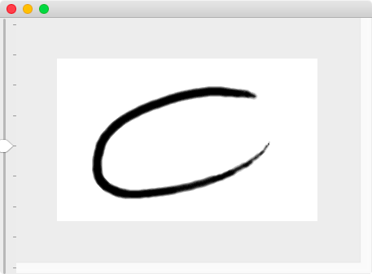
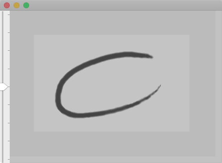
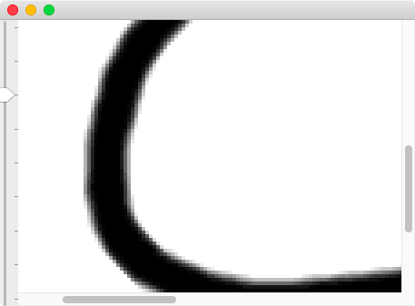
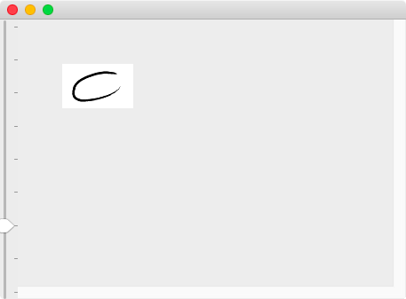

The Document Window(The Main Window)
The Document Window(The Main Window) correspond with edit of image(document).
This window only allow open each image(document). This window is multi-opened when the PoCo.app open multi-images(multi-documents).(In other word, all sub-windows are single-opened on the PoCo.app. Such sub-windows shared with multi-images, sub-windows show such image information when switch to current image.)
Almost all operate of edit are doing on this window.

Magnifying
The PoCo.app do not have what is called the Magnifying glass(aka the Loupe, the Lupe).
Instead, there is magnify slider on the Main Window(and the View Window) left side.

When this slider move to above, zoom in on image. When this slider move to below, zoom out on image.


Note that interpolation is not apply when zoom out, because performance of image edit.
Appropriate either the Main Window or the View Window
The main window and the view window, both look is so similar.
Because the PoCo.app do not have the Magnifying glass.
However, expecting use case distinguish both window.
For example:
- When zoom in on image on the main window.
- Simaltaneous, likely you want to show no magnified image due to check you work.
Above situation, the view window is useful.
Therefore, both windows usage are below:
- When zoom in on image on the main window.
- Simaltaneous, no magnified image show on the view window.
Above mentioned that the main window do not apply interpolation when zoom out on image. That is, the view window apply interpolation when zoom out on image in order to complete view.
Hence, both windows have similar look-feal. However, expect purpose exactly distinguish that following:
- The mainly purpose of the main window that is 'edit'.(So that alias name is the Document Window.)
- The mainly purpose of the view window that is 'view'.(So that name is the View Window.)